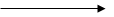
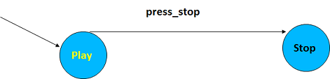
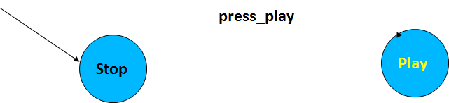
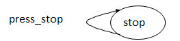
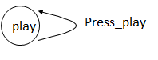
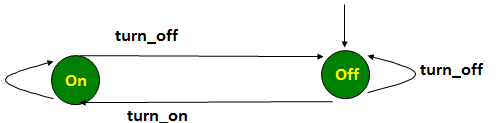
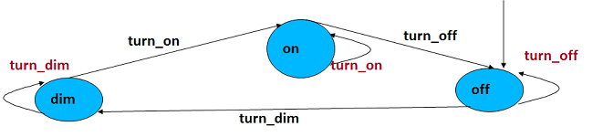

State Transition Diagram
- The STD was invented in the 50’s at Bell Laboratories to solve process control problems related to switching of telephone calls.
- Sooner later, such graphic technique became useful for electrical engineers
- Since then, the STD became a powerful Computer Aided Software Engineering (CASE) tool which is useful across most of the software life cycle.
- Shows the static view of a system or an object
- Shows the behaviour of a system or an object
- Describes objects or systems’ activity and availability
- Basically, a state is a condition or situation during the life of a system/object, during which it satisfies some condition, performs some activity, or waits for some event
- An essential concept in analysis and systems theory
- Enable us to reason about what is possible, what and when are the next possible states
- Help us to know what causes transitions/moves between states?
- Help us to create models of behaviour
- Example can be:
- making a cup of tea (a real world object)
- Data or context flow diagram (computer science environment)
- An STD is a way of describing the time-dependent behaviour of a computer system.
- With a state, you can observe mode of behaviour of the computer system.
- Think about an ATM cash Machine, a drink vendor machine, a mobile phone, an i-pod, online transaction, an elevator, a traffic light, landline call waiting, TV channels and others. Do you actually know that these are all linked with STD.
- An important special case of dynamic behaviour is the interaction between human users and a system.
- A state is denoted by a node:
- We normally include the name of the state inside the node, so for example, ‘on’ or ‘off’
- A light switch may have two states; ‘on’ and ‘off’
- What about a light switch with states of ‘on’, ‘dim’ and ‘off’. How many states?
- Large systems may have millions of states
- Transition is denoted by an arrow 
- The arrow is called an ‘arc’ and the arc which indicates the start or initial state is always unlabelled
- We also have ‘normal' arcs which we label with the event on that arc:
- Below are examples of the notations that are required to develop a simple STD.
- 
- 
- Generally, there is an initial state. We have to start from somewhere. In the case of the DVD Player, we can start from play
- If input is received, one of the transitions is triggered, possibly producing output and changing the state.
- The state diagram tell us which state is reached when an operation is used. In the example below, the state of play is reached
- It also tells us which sequences of operations are allowed. In the example below, the sequence is from press_stop to press_play
- Sometimes, the state doesn’t change when we apply an event to a system.
- For example:
- Imaging you are using a DVD player
- If you attempt to stop DVD player when it is already on ‘stop’, the outcome will be
- 
- Similarly, If you attempt to play the DVD player when it is already on ‘play’, the outcome will be
- 
- We describe the transition between states
- To make a good STD we need to know why we are making it.
- This indicates which states we are interested in.
- We need to know which transitions we are interested in and why are they important
- You must have a taste by now about how states and transitions are vital in computer science; ATM cash machine, elevator, online transaction and others.
State Transition Diagram
State Transition diagram: A light switch example
- The following represents a light switch.
- There are two states: on and off
- There are two events: turn_on and turn_off
- Initial state is at ‘state off’. If you turn off on the state ‘off’, the state does not change. The same concept is applied if initial state is on state on.
- From the initial state, the sequence of the light switch can only be turn_on and back to turn_off
- 
State Transition diagram: Advanced light switch example
- The following represents a light switch.
- There are three states: on, dim and off
- There are three events: ‘turn_on’, ‘turn_dim’ and ‘turn_off’
- Initial state is at ‘state off’. If you turn off on the state ‘off’, the state does not change. The same concept is applied for the other two states: ‘on’; and ‘dim’.
- From the initial state, the sequence of the light switch can only be turn_dim, turn_on and back to turn_off
- 